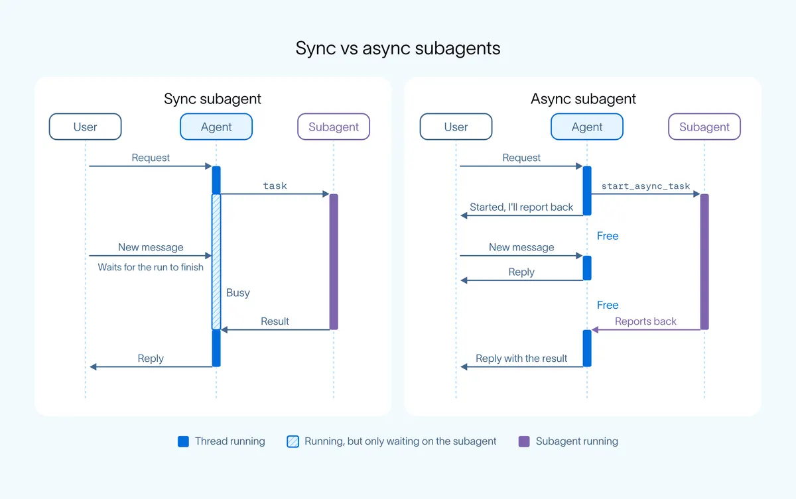

非同步子代理：把「等」從迴圈裡搬走
導讀原文：LangChain〈Agents Are Going Async〉——產品公告兼架構說明（作者 Sydney Runkle、Thushanth Bengre）
同步迴圈的問題不是慢，而是不能一邊回應、一邊推進。

ReAct 迴圈是「叫工具、等結果、再決定」。一次長呼叫就把整個迴圈停住，後面的任務只能排在它後面。
非同步子代理像 asyncio.create_task，或一個先不 await 的 Promise：呼叫立刻回傳，結果晚點才到。
原文把需求收成兩條：使用者到得了主代理，任務並行且互不阻塞。
原文開場的比喻很直白：一個交辦後就消失、只等成果才出現的幕僚，你大概會直接換掉。
改成非同步之後，代理能承擔的工作量跟著背景 worker 的數量成長，而不是被單一迴圈的長度綁死。
五個工具，其實就是一張任務表
| 工具 | 做什麼 | 對應的動作 |
|---|---|---|
| start_async_task | 在獨立執行緒啟動子代理，立刻回傳 | 開 |
| check_async_task | 取得狀態，完成後連結果一起拿 | 查 |
| update_async_task | 對執行中的任務追加新指令 | 改 |
| cancel_async_task | 停掉執行中的任務 | 停 |
| list_async_tasks | 列出所有任務與狀態 | 列 |
把五個工具排開，剛好是一張任務表：開、查、改、停、列。（編輯觀點：這是最小控制面，不是排程器。）
原文沒交代調度細節，例如誰先跑、同時上限幾個、失敗怎麼重試。
每個非同步子代理有自己的執行緒，所以能被單獨更新、單獨中止，不必整批重來。
（編輯推論：控制面最小化之後，難題會從「怎麼寫迴圈」搬到「怎麼看住十條執行緒」——上限、逾時與成本歸屬都得自己決定。）
改指令之前，先決定要不要打斷
兩種策略由子代理定義上的 update_strategy 欄位決定，不是由主代理臨場判斷。
（編輯觀點：這其實是重工該由誰吸收——改規格丟掉的是子代理累積的判斷，加驗收丟掉的是它的時間。）
原文的例子分得很清楚：改方向用 interrupt，補條件用 enqueue。（編輯觀點：選錯就是把已完成的推理丟掉，或讓新指令枯等。）
回報：忙、閒、卡在核准
子代理做完，主代理當下在幹嘛？
本站重繪。原文本段搭配官方示意圖說明，此處以文字重排三種狀態；原文未給狀態機的判定順序。
沒做完的任務一律寫在主代理的系統提示裡，它隨時知道手上有什麼在飛。
需要核准的子代理顯示為 waiting，使用者在它自己的執行緒回答，不打斷主代理。
在 Slack 版 Managed Deep Agents，這個請求會貼回原本的討論串，核准與對話留在同一個地方。
原文看到生態在收斂：不只一家這樣做
原文的三個例子是：Claude Code 預設在背景跑子代理；OpenAI 的 dots 把工作交給背景 worker；DeepSeek Harness 用路由器對人說話、背景 worker 平行執行。
OpenAI 近期也加入非同步工具呼叫：模型呼叫後繼續做事，結果用下一次請求補回。
Managed Deep Agents 每個上線代理都多一個 general-purpose 的非同步副本，執行時再決定走前景或背景。
async-deep-agents repo 另有一個可跑的 supervisor 範例，用 researcher 與 coder 兩個子代理，Python 與 TypeScript 各一份。
（編輯觀點：真正的訊號是三家做法不同、結論相同——瓶頸不在模型多聰明，而在誰被允許佔住那一條迴圈。）
原文也預期這個模式會擴散到工具層：不只子代理可以非同步，工具呼叫也可以。
要注意邊界：任務通知還在 beta，API 可能再改。
帶走三件事
阻塞是架構問題，不是速度問題。一次長呼叫就讓整個代理停擺。
先有控制面，再談調度。五個工具管的是任務，不是優先級。
打斷或排隊，是設計決策。預設打斷，適合改規格而非加需求。
同一主題的其他館藏
導讀為本站編輯內容（AI 摘解自原文與館藏重點，非官方文件）；引述數據出自原文，圖解與小標為編輯整理。內容經對照原文的獨立事實審查後發布。